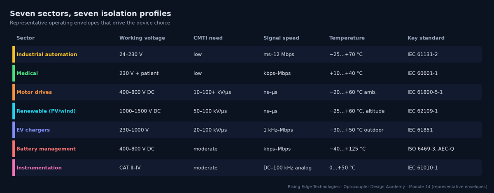
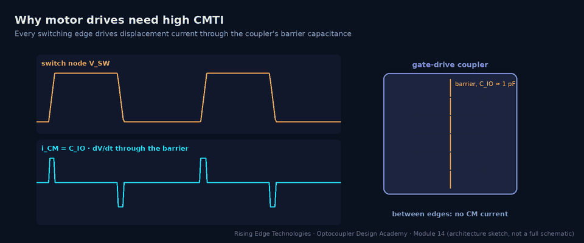

Applications
Sector-by-sector application patterns: industrial automation I/O, medical patient-connected electronics, motor drives and inverters, solar and wind power conversion, EV charging infrastructure, battery management systems, and precision instrumentation front ends.
Illustrations and animations are original teaching drawings, not to scale. Values marked representative are typical of common parts; always confirm against the current datasheet or standard you design to.
Isolation requirements cluster by sector: a PLC input card and a SiC traction inverter both use “optocouplers”, but almost every number that matters differs by an order of magnitude. Start by placing your product in the envelope below.

A PLC or remote I/O module is the classic optocoupler application: dozens of slow 24 V signals, a noisy cabinet, long field cables and a price per channel measured in cents.
Standards
IEC 61131-2 (input types, immunity), with safety via IEC 61010-2-201; generic EMC IEC 61000-6-2. Field I/O and logic are usually both SELV/PELV, so the isolation is functional: for noise and ground loops. Relay outputs switching mains need reinforced spacing.
Family choice
Quad phototransistor couplers for inputs (cost, no field supply); PhotoMOS or opto-driven high-side switches for outputs; fast optos or digital isolators for fieldbus.
Environment
−25…+70 °C cabinet, pollution degree 2 (PD 3 in harsh plants), EFT bursts on cables (±1–2 kV), surges on long lines, 10–20 year life at 24/7 duty.
Reference snippet — RS-485 fieldbus at 1 Mbps through a TLP2361-class coupler
- Bit time = 1 µs. A common rule keeps total pulse-width distortion below ~10 % of the bit: 100 ns.
- Coupler PWD (representative max) ≈ 30 ns, plus transceiver skew ~10 ns: 40 ns, which is within budget.
- At 12 Mbps (PROFIBUS DP max) the bit is 83 ns: 40 ns is 48 %, so use a digital isolator or an isolated transceiver (Module 15).
Medical equipment connected to a patient needs the highest isolation margins in this course and the tightest leakage limits: the patient may be anaesthetised, and a cardiac catheter makes microamps dangerous.
Standards
IEC 60601-1: 2 MOPP between mains and the applied part; 2 MOOP to operator-accessible parts; B/BF/CF applied parts with patient-leakage limits (representative 100/100/10 µA in normal condition).
Family choice
Wide-lead reinforced couplers (≥ 8 mm creepage, VISO ≥ 5 kVrms) or reinforced digital isolators for data; medical-grade DC-DC with low interwinding capacitance for power; PhotoMOS for nurse-call contacts.
Environment
Benign temperature (+10…+40 °C), but cleaning agents, defibrillator pulses on ECG leads (defibrillation-proof applied parts) and strict EMC (IEC 60601-1-2).
Reference snippet — patient leakage through the isolation
A BF ECG front end is isolated by a data coupler (CIO ≈ 1 pF) and a medical DC-DC (10 pF interwinding). Test at 110 % of 240 V, 60 Hz: 264 V.
- Total barrier capacitance: 11 pF.
- I = 2π × 60 × 11 pF × 264 V = 1.1 µA, which is well below 100 µA (BF) and even 10 µA (CF).
- Replace the DC-DC with a generic 100 pF module and add a 470 pF Y-cap: I ≈ 2π × 60 × 571 pF × 264 = 57 µA, which fails CF and eats most of the BF budget.
Drives are the high-dV/dt world. Every switching edge on the DC link drives displacement current through each barrier that bridges the switch node, and the control electronics must be protectively separated from hundreds of volts.

Standards
IEC 61800-5-1 (DVC classes, protective separation), IEC 61800-3 (EMC), IEC 60204-1 for the machine.
Family choice
Opto gate drivers (HCPL-3120, ACPL-332J with DESAT/Miller clamp, TLP250) for IGBTs; high-CMTI isolated gate drivers for SiC/GaN; isolated amplifiers or ΔΣ modulators for current sensing; IL300/HCNR201 for slow voltage sensing.
Environment
Heat from the power stage, vibration, conductive dust (pollution degree 2–3), regeneration overvoltage, long motor cables that multiply dV/dt reflections.
Reference snippet — CMTI requirement for IGBT vs SiC
- IGBT, 560 V DC link, 100 ns edge (10–90 %): dV/dt = 0.8 × 560 / 100 ns = 4.5 kV/µs. Target ≥ 2× = 9 kV/µs; classic opto gate drivers rated in the tens of kV/µs are comfortable.
- SiC, 800 V bus, 16 ns edge: 0.8 × 800 / 16 ns = 40 kV/µs. Target ≥ 80 kV/µs: only the highest-CMTI opto drivers or digital-isolator gate drivers qualify (check the datasheet minimum, not the typical).
- Barrier current at 40 kV/µs with 1 pF: 40 mA per edge, returned through the gate-driver supply: keep that loop small (Module 11).
Solar and wind converters combine drive-like dV/dt with very high DC working voltages (1000 V and increasingly 1500 V PV strings), outdoor installation, altitude and 20-year life expectations.
Standards
IEC 62109-1/-2 (PV converter safety), IEC 62477-1, grid codes; insulation coordination via IEC 60664-1 including altitude.
Family choice
Reinforced gate drivers with high VIORM (often digital-isolator based at 1500 V), isolated amplifiers for string voltage/current, PhotoMOS for insulation-resistance measurement, optos for relay feedback.
Environment
−25…+60 °C ambient with solar heating, humidity and condensation, altitude up to 4000–5000 m, lightning surges on long DC cables.
Reference snippet — is a 1140 Vpk coupler enough at 1500 V DC?
- Working voltage across a gate driver referenced to the negative rail: up to 1500 V DC plus switching overshoot (~10 %): about 1650 Vpk.
- 1650 > 1140 VIORM: the coupler is not suitable, whatever its UL 1577 VISO.
- Options: a driver with VIORM ≥ 2 kVpk class, a topology that halves the voltage across each barrier (three-level/split DC link), or two barriers in series.
- Altitude: clearances need the altitude correction (e.g. about 1.14 at 3000 m, 1.29 at 4000 m, 1.48 at 5000 m, representative per IEC 60664-1).
EV chargers range from 230 V AC wallboxes (a smart contactor with a control pilot) to 1000 V DC fast chargers that are, in effect, large isolated power converters. Both must keep the user interface, the control pilot and the communications safely separated from mains and the DC output.
Standards
IEC 61851-1 (general) and IEC 61851-23 (DC chargers), IEC 62196 connectors, national installation rules; UL 2202 / UL 2594 in North America.
Family choice
H11AA1 or PC817 with resistor chains for mains/welded-contact detection; fast optos for pilot PWM readback where isolated; isolated gate drivers and amplifiers inside DC power modules; digital isolators for CAN/PLC communication.
Environment
Outdoor enclosures (−30…+50 °C), condensation, pollution degree 3, surges, 24/7 duty for public DC chargers.
Reference snippet — mains-presence sensing with H11AA1
Two 100 kΩ resistors in series with the H11AA1 input at 230 Vrms.
- LED current ≈ 230 V / 200 kΩ = 1.15 mArms (1.6 mA peak).
- Power per resistor: (1.15 mA)2 × 100 kΩ = 0.13 W. Use ≥ 0.25 W, pulse- and voltage-rated (≥ 400 V each) parts.
- H11AA1 CTR (min, representative 20 %) at 1.6 mA gives IC ≈ 0.32 mA peak: a 22 kΩ pull-up from 3.3 V (0.15 mA) is pulled low near each peak. Firmware sees 100/120 pulses per second when mains is present.
- The resistor chain crosses the barrier distance on the PCB: its layout must respect the same creepage as the coupler.
Battery management systems measure every cell of a 400–800 V stack and report to a 12 V vehicle controller. The isolation problem is both many potentials (each module at a different voltage) and automotive qualification.
Standards
ISO 6469-3 and OEM specifications for HV/LV isolation; AEC-Q100 (ICs), AEC-Q101/Q102 (discretes/optoelectronics); ISO 26262 for functional safety (Module 16).
Family choice
Capacitive/transformer daisy chains between cell monitors; AEC-Q100 digital isolators between stack and master; automotive optos for contactor feedback; automotive PhotoMOS for insulation monitoring.
Environment
−40…+85/+125 °C, vibration, thermal cycling, 15-year vehicle life, low quiescent-current budgets when parked.
Reference snippet — insulation-monitoring accuracy
An 800 V pack must flag an insulation fault below a representative 100 Ω/V (80 kΩ) and warn earlier (e.g. 500 Ω/V = 400 kΩ). Two PhotoMOS relays switch measurement resistors to chassis.
- PhotoMOS off-state leakage (representative 1 µA at rated voltage) looks like 800 V / 1 µA = 800 MΩ in parallel with the insulation.
- 800 MΩ against a 400 kΩ threshold is a 0.05 % error, which is negligible.
- A standard phototransistor opto would leak more when hot and cannot switch the measurement path; PhotoMOS (or HV MOSFET + isolated driver) is the usual choice.
Instrumentation isolates for accuracy and safety: ground loops corrupt microvolt signals, and a measurement input may sit on a CAT III mains conductor. The choice is between isolating the analog signal or digitising first and isolating data.
Standards
IEC 61010-1 and IEC 61010-2-030 (measurement categories), IEC 61326-1 EMC. Channel-to-channel isolation is rated like any other barrier.
Family choice
IL300/HCNR201 servo-linear couplers for moderate-accuracy analog; isolated ADC + digital isolator for high resolution; isolated DC-DC per channel.
Environment
Laboratory or panel (0…+50 °C) but high common-mode voltages, fast common-mode transients on power measurements, and precision drift requirements.
Reference snippet — is a linear opto good enough for 12 bits?
±10 V signal, 12-bit target (1 LSB = 0.024 %). IL300-class transfer gain K3 drift (representative) ≈ 50 ppm/°C.
- Over a 30 °C span: 50 ppm × 30 = 0.15 % gain error, about 6 LSB at 12 bits.
- Initial K3 tolerance is several percent: a one-point gain calibration is mandatory.
- For ≤ 10-bit accuracy with calibration a linear opto is fine; for 16–24 bits place the ADC on the sensor side and isolate SPI.
Across all seven sectors the same few questions decide the design:
| Question | Where it bites hardest | Module |
|---|---|---|
| What is the peak working voltage, including overshoot? | PV, drives, BMS | 6, 16 |
| What insulation class and how many means of protection? | Medical, EV, PV | 16 |
| What dV/dt appears across the barrier? | Drives, PV, DC chargers | 6, 13, 15 |
| Is CTR at end of life still enough at the worst threshold? | PLC, SMPS feedback | 9, 10 |
| What are the leakage limits? | Medical, instrumentation | 13 |
| Which environment: temperature, pollution degree, altitude? | PV, EV, BMS | 8, 11 |
| Opto or digital isolator? | Everywhere above ~1 Mbps | 15 |
Industrial
Functional isolation, cost per channel, 15 V threshold design, EFT/surge robustness.
Medical
2 MOPP, 8 mm creepage, µA-level leakage: package and capacitance first.
Drives
CMTI ≥ 2× dV/dt; gate drivers with DESAT; aux supply feedback shares the barrier.
Renewables
VIORM vs 1000–1500 V DC, altitude correction, outdoor life.
EV chargers
Mains sensing chains, pilot accuracy, surge and condensation.
BMS
Many potentials, AEC-Q parts, low static current, PhotoMOS for insulation monitoring.
Instrumentation
Analog (IL300) vs digital (isolated ADC) isolation; per-channel supplies.
Method
Build a per-product isolation profile before choosing parts.
Design checklist
Tick items as you review a design. Your ticks are saved in this browser only; use your browser’s print function for a sign-off copy.
Four parts: multiple choice, true/false, a matching exercise and engineering scenarios. Score 80 % on the multiple choice to pass the module.